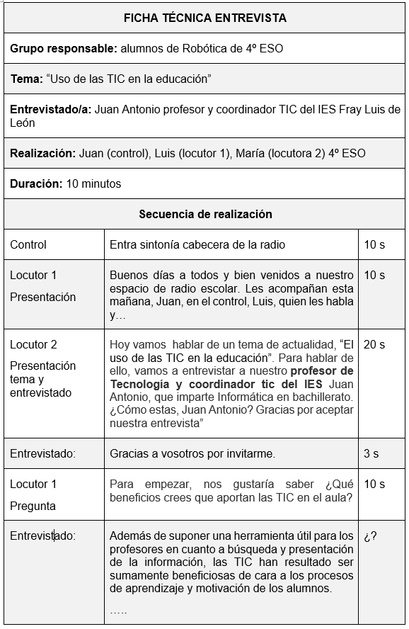
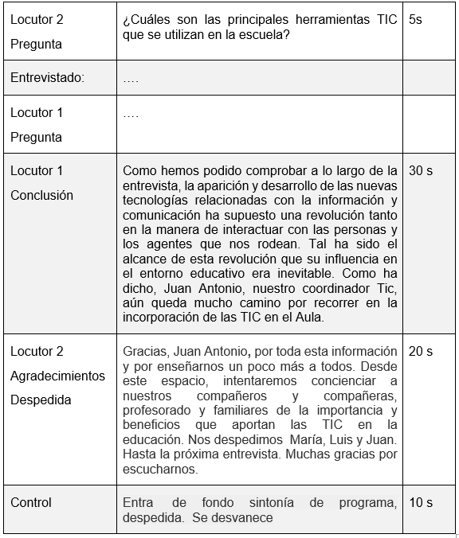

Una entrevista es un formato radiofónico, un diálogo o una conversación entre el locutor/a y una o varias personas entrevistadas. Consiste en una serie de preguntas preparadas con anterioridad y dirigidas a una o a varias personas que son importantes por sus conocimientos, sus opiniones sobre un tema o por su personalidad.
Las entrevistas nos permiten brindar a la audiencia información, datos, opiniones, testimonios, sobre temas que queremos comunicar. Y nos permiten hacerlo en la voz propia de los especialistas, las protagonistas, los perjudicados, las artistas, los funcionarios. Que sean ellas y ellos con sus voces que lleguen a las audiencias.
Tipos de entrevista
Desde el punto de vista del guion diferenciaremos dos formatos de entrevista:
- Entrevista en directo: no existe un guion como tal, aunque sí es frecuente que el entrevistador disponga, como instrumento de realización, de una escaleta con una batería de preguntas posibles. Allí lo que sucede, se escucha en el momento. Tendremos que improvisar más y saber adaptarnos a un entrevistado que no habla mucho o a los que no paran de hablar. Y nuestra voz estará presente.
- Entrevista grabada: nos permite pulir pequeños errores, entresacar las declaraciones que más interesan, modificar el orden de la entrevista, etc. durante el montaje. Tenemos más flexibilidad en ese sentido. Las entrevistas grabadas tienen que sonar como si estuviéramos en vivo.
La ventaja de la entrevista grabada es que podemos salir con nuestro grabador fuera de la emisora. Ir al encuentro de los protagonistas en sus propios lugares: que hablen desde el mercado, en su oficina y así registrar también los sonidos reales de fondo.
Tipos de pregunta
- Cerradas. Son las que no permiten desarrollar la respuesta. El entrevistado puede responderlas con un sí, un no, o un número. No permite profundizar en un tema pero son buenas para aclarar dudas o cuestiones puntuales que necesitan respuestas concretas.
- Abiertas. Con las abiertas dejamos la posibilidad de que el entrevistado se explaye sobre el tema, y nos permite obtener mayor riqueza en los testimonios. ¿Cuáles son tus comidas bolivianas preferidas y por qué?
- Comentario. Muchas veces el entrevistador puede hacer un comentario, que aunque no sea una pregunta, en el contexto de una entrevista tipo charla, inspira o da pie al entrevistado para retomar desde allí y hablar o profundizar sobre algún tema.
Elementos de la entrevista
Junto a los/las protagonistas (el/la oyente, el/la locutor/a y el/la entrevistado/a), los elementos de organización de la entrevista son la clave de su éxito.
Entrevistador
- El entrevistador debe tener disposición y/o paciencia para así llevar a cabo con éxito una entrevista. Debe tener seguridad al momento de empezar a emplear las preguntas.
- Debe hablar de manera clara, precisa y en voz entendible.
- Es conveniente que el entrevistador hable en voz regulable ya que puede ayudar a mejorar de alguna u otra manera el resultado de la entrevista.
- Las preguntas debe hacerlas de manera natural para que el entrevistado responda con sinceridad y se sienta a gusto entrevistándose.
- Las preguntas deben ser precisas y deben ser sencillas (cortas), deben ser exactas a lo que se quiere preguntar, y adecuadas al nivel educativo del entrevistado, y la entrevista debe ser en el menor tiempo posible, o depende de la disponibilidad de tiempo de ambas partes.
- El entrevistador debe estar seguro de lo que desea preguntar, si es necesario anotar las preguntas antes de comenzar la entrevista.
- El entrevistador debe estar preparado para realizar preguntas improvisadas a partir de las respuestas debe de procurarse que las preguntas sean de acuerdo al tema.
Entrevistado/a
Es aquella persona a la que preguntamos algo para utilizar esa respuesta en nuestra producción de radio. En función de la información que queremos obtener, tenemos distintos tipos de fuentes a las que recurrir.
- Fuentes primarias: son aquellas con una relación directa al suceso del que queremos obtener información. Una víctima de ciberacoso, un músico para hablarnos de su nuevo disco, etc.
- Fuentes secundarias: son aquellas que hacen referencia a fuentes primarias. Un amigo de una víctima de ciberacoso, el crítico de un músico y no su compositor.
Elige bien a la persona: ¿Conoce el tema? ¿Su experiencia es importante? ¿Lo que cuenta, piensa o siente es de interés o utilidad para tus oyentes? Conócele antes de elegirle, habla con él o ella previamente.
Tema
Define el tema de la entrevista: Piensa como tus oyentes. ¿Sobre qué quieren saber o aprender? Ponte en el lugar de la persona oyente y define el objetivo de esa entrevista.
Infórmate bien sobre el tema de la entrevista: Lee libros, artículos, entrevistas. Visualiza vídeos o pregunta a quienes sepan sobre el tema. Escoge los aspectos en los que quieres centrarte.
No quieras abarcar muchos temas en una sola entrevista. Piensa en un tema general y luego elige los específicos en función del tiempo que tengas. Es mejor desarrollar un sólo tema a profundidad en 5 minutos, que hacer 20 preguntas sobre diferentes temas en ese mismo tiempo porque nadie se enterará de nada.
Audiencia
Siempre pensemos en la audiencia. Hacemos radio para expresarnos, pero también para informar, para comunicarnos, para entretener, para educar, para acompañar.
¿Qué queremos con la entrevista? Que el oyente comprenda un tema, que conozca la opinión de sus vecinas, que se distraiga un rato. Lo que sea, debemos tenerlo claro y presente, porque hacemos radio para quienes nos escuchan. Tengamos a la audiencia siempre como un objetivo fundamental de la entrevista.
Fases de la entrevista
La entrevista al considerarse un proceso comunicativo y de interacción social, se constituye en varias fases, tomando en cuenta el antes, el durante y el después de la entrevista.
Preparación
Lo primordial en esta primera fase es elegir el personaje y el tema a desarrollar durante el encuentro con el entrevistado.
En esta fase, es primordial elaborar un cuestionario con las posibles preguntas relacionadas con el tema a desarrollar. La ventaja de emplear este recurso, es que se convierte en una guía para el entrevistador al momento de formular las preguntas, además de que dicho instrumento fortalece el conocimiento del tema.
Realización
Antes de iniciar la entrevista, las personas que realizan la locución deben presentar el tema, señalar sus antecedentes, sus implicaciones para la comunidad, y la importancia o razón por la que se incluye en el programa. También deben presentar al invitado/a, mencionando además de su nombre y apellidos, las razones por las que es importante su opinión al respecto del tema.
El entrevistador debes ser incisivo pero respetuoso. Crear un ambiente cordial:
- Procura crear un buen clima de conversación: muestra interés.
- Dirígete a la persona invitada de una forma personal y trátala respetuosamente.
- Evita muletillas ( “Emm…”, “esto…”)
- Pregunta por hechos concretos y por experiencias.
- ¡No sueltes nunca el micrófono! Debes estar atento.
En la entrevista las preguntas deben ser claras, sencillas, directas y concretas.
- Haz las preguntas de una en una.
- Plantea preguntas abiertas pero no demasiado generales. Evita usar continuamente las preguntas cerradas (respuestas de sí o no, o con datos muy concretos ya que son menos interesantes para el oyente).
- No siempre hay que encasillarse en las preguntas del cuestionario, algunas pueden aflorar durante la conversación. Por ello hay que estar muy atentos/as y practicar la escucha activa. Las respuestas de la persona entrevistada son las que más aportan al oyente.
Como norma general, la intervención de cada participante nunca debe durar más de 3 minutos seguidos, para no agotar a las personas oyentes. La duración total de la entrevista puede variar.
Redacción y edición
La estructura de la entrevista deberá tener las características de una noticia, título, lead o entradilla, cuerpo o desarrollo y cierre.
La entrevista puede redactarse de dos maneras, la primera, en forma de interrogatorio tipo preguntas y respuestas y la segunda, como texto literario, de ésta forma se pueden utilizar recursos literarios y otras técnicas que enriquecerán el trabajo de redacción.

